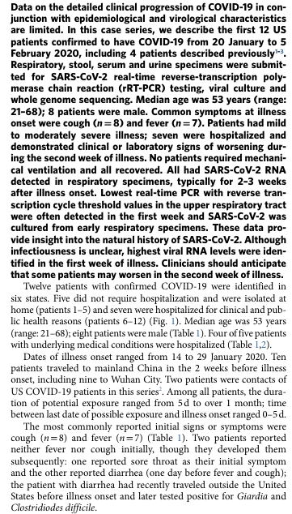
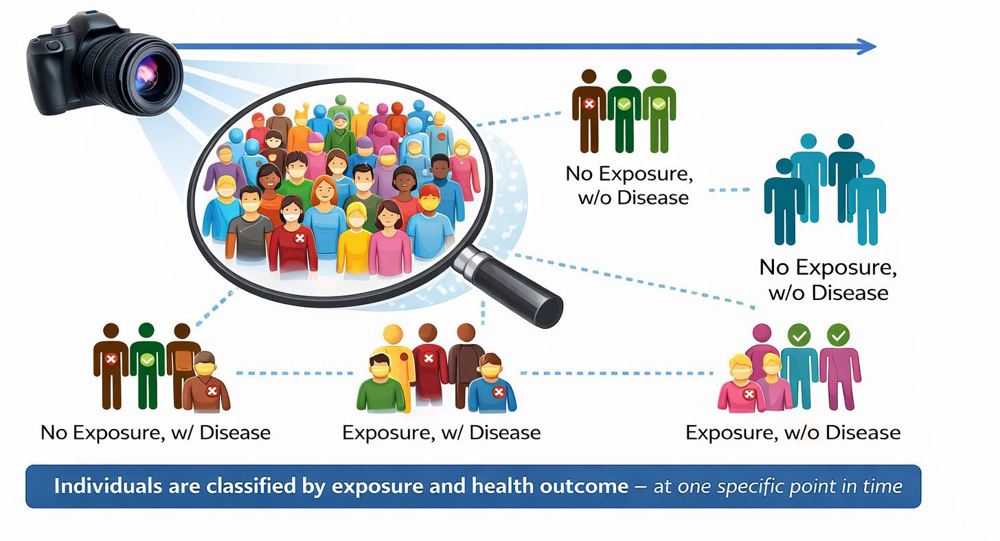
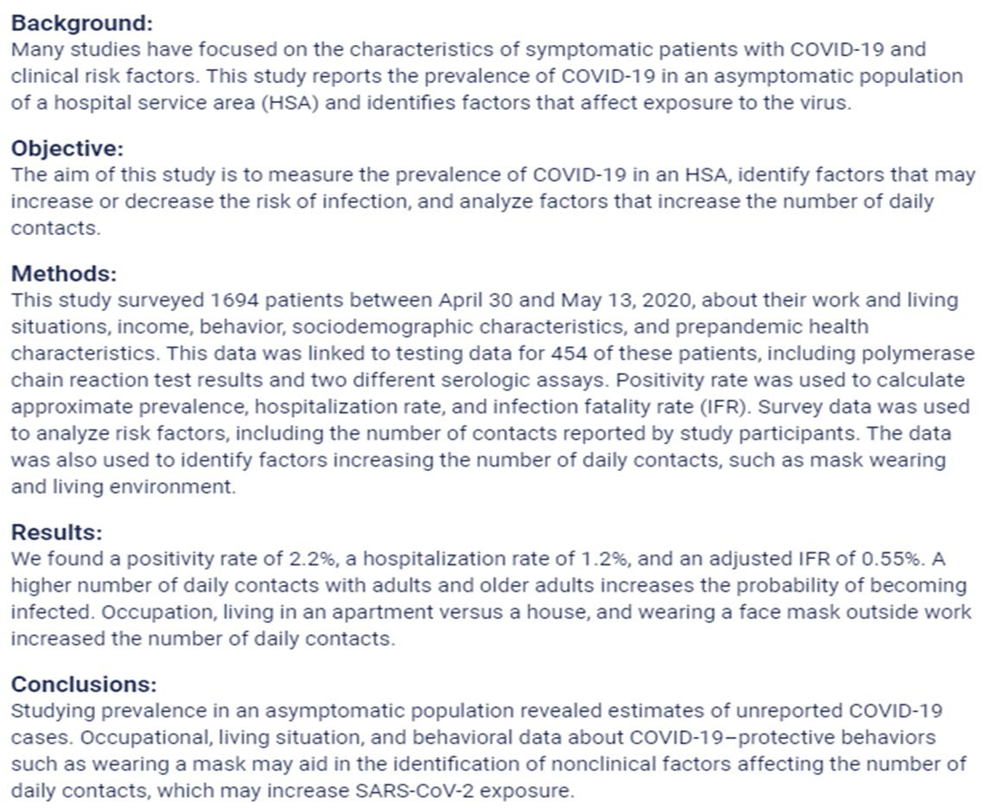

Descriptive Epidemiology
APHS 20203 • Epidemiology & Biostatistics
What Is Descriptive Epidemiology?
Purpose: Describe how health and disease are distributed across populations
Core Questions
Who is affected? (Person)
Where does it occur? (Place)
When does it occur? (Time)
Why It Matters
Monitor health and disease trends
Guide health services planning
Identify priorities for further study
Example: Descriptive Epidemiology in Practice
Scenario: Breastfeeding trends among U.S. infants born in 2012:
43% exclusively breastfed for the first 3 months
22% exclusively breastfed for 6 months
What This Describes
- Person: U.S. infants; Place: United States; Time: First 3 vs. 6 months after birth
Discussion Questions
What patterns do you observe across time?
What additional descriptive data would help clarify this pattern (e.g., age, SES, region)?
Which groups might be most affected by this decline?
Descriptive Epidemiologic Study Designs
This section focuses on three common descriptive designs:
Case reports
Case series
Cross-sectional studies
Other descriptive designs exist (e.g., ecologic studies, surveillance-based descriptions)
What these designs have in common
Describe who, where, and when
Do not test causal relationships
Often provide the first signal of a health issue or disparity
Case Reports
Definition: A detailed description of a single patient or a small number of unusual cases, typically reported individually, not as a group analysis.
Purpose
Document novel, rare, or unexpected health events
Alert clinicians and public health officials to new or emerging issues
Why They Matter
Often provide the first signal of a new disease, complication, or side effect
Contribute to early public health awareness
Serve as educational examples in clinical and public health settings
Key Limitation
- No comparison group → cannot estimate risk or prevalence
Case Reports: Example
Scan the text and answer:
- How many cases are described in detail?
- Where do you see evidence to support this is a single case?
- Person
- What basic characteristics of the patient are provided?
- Place
- Where did this case occur?
- Where did the outbreak begin?
- Time
- When was this case identified relative to the outbreak timeline?
- What is being described vs. inferred?
- Which parts describe this patient?
- Which parts reference broader context?
Case Series
Definition: A descriptive study that reports on multiple patients with the same diagnosis or condition, described collectively.
Case report: Each case is described on its own
Case series: Multiple cases are described together to identify patterns
What Case Series Can Describe
Common clinical features
Typical disease progression
Distribution by person, place, or time
Key Limitation: Cannot estimate risk, rates, or causal effects
Case Series: Example
Scan the text and answer:
- How many patients are included?
- Where in the text do you see evidence that more than one case is described?
- Why is this a case series and not multiple case reports?
- How are the patients discussed?
- Are patients described one at a time, or
- Are findings described across patients as a group?
- What language signals grouping?
- What patterns are described across cases?
- (e.g., symptoms, clinical course, outcomes, timing)
- What important information is still missing that prevents causal conclusions?

Why Individual Cases Belong in Epidemiology
“Isn’t epidemiology about populations?”
Yes — but populations are built from individual cases.
Case reports and case series focus on individuals → to identify and describe new or unusual health events
These early descriptions:
Reveal what counts as a case
Signal emerging health problems
Motivate population-level investigation
Cross-Sectional Studies
Definition: A descriptive study that examines health outcomes and related characteristics across a defined population at a single point in time.
Key Features
Data collected from individuals
Results describe population-level patterns
Measures prevalence, not incidence
Exposure(s) and outcome(s) assessed simultaneously
Core Focus: A snapshot describing how health outcomes are distributed across a population
Cross-Sectional: One-Time Snapshot

Cross-Sectional Study: Example
Scan and Answer:
- Health problem:
- What outcome is being described? → Incidence or prevalence?
- Who: Who is included in the study population?
- Where: What geographic or service area is studied?
- When: Does this describe a snapshot or follow-up over time?
- Measures: What outcomes and exposures are assessed at the same time?
- Design check: What tells you this is cross-sectional, not a case series or cohort?

Project Prep 2
Person, Place, and Time
Person Variables: The “Who” Factor
Definition: Person variables are demographic characteristics that can influence health outcomes.
Purpose: Understanding who is at risk helps tailor public health interventions.
Key Person Variables:
Age, Sex, Race/ethnicity, Socioeconomic status
Other examples: Gender, Marital status, Nativity (place of origin), Religion
Age
Definition: Age describes how disease occurrence and health outcomes vary across the life course.
Why Age Matters
Disease patterns often differ by life stage
Helps identify age-specific health priorities
Examples
Childhood: Higher occurrence of some infectious diseases
Young adults: Higher rates of injury-related outcomes
Older adults: Higher prevalence of chronic disease and mortality
Discussion Question: What health concerns are most common among
college-aged adults?
Sex/Gender
Definition: Sex and gender describe differences in health outcomes related to biological characteristics and social roles, behaviors, and norms.
Why Sex/Gender Matters
Many diseases show different patterns of occurrence and outcomes by sex or gender
Differences may reflect biology, behavior, social context, or access to care
Examples
Heart disease: Higher rates and earlier onset among males
Autoimmune diseases & depression: Higher prevalence among females
Mortality: All-cause age-specific mortality rates are typically higher among males
Discussion Question: What health concerns or health-related behaviors differ by sex or gender among college students?
Race/Ethnicity
Definition: Race and ethnicity describe population groups based on social, cultural, historical, and geographic characteristics.
Why Race/Ethnicity Matters
Disease occurrence and health outcomes often vary across groups
Patterns reflect inequities in exposure, resources, and access to care, not biology alone
Examples of Observed Patterns
Asthma: Lower reported prevalence among some Hispanic populations
Cognitive decline: Higher prevalence among American Indian or Alaska Native populations
COVID-19: Higher mortality rates among non-Hispanic Black populations, especially early in the pandemic
Discussion Question: What factors—other than biology—might help explain differences in health outcomes across racial or ethnic groups?
Socioeconomic Status (SES)
Definition: Socioeconomic status reflects an individual’s or group’s economic and social position, commonly measured by income, education, and occupation.
Why SES Matters
Strongly associated with differences in health outcomes and access to care
Patterns often show a social gradient, with worse health at lower SES levels
Examples of SES-Related Patterns
Higher rates of chronic disease and mortality in lower-SES groups
Reduced access to preventive services and timely care
Greater exposure to environmental and occupational risks
Discussion Question: Which aspects of SES might most strongly influence health among college students?
SES vs. SDOH
| Socioeconomic Status (SES) | Social Determinants of Health (SDOH) | |
|---|---|---|
| Concept | Social position | Living and working conditions |
| What it describes | Social and economic standing | Conditions shaping daily life and health |
| Common measures / examples | Income, education, occupation | Housing, working conditions, access to care, education, social support |
Exercise: SES or SDOH?
For each example, decide whether it best represents SES or SDOH. Reminder: SES reflects position; SDOH reflect conditions that come with that position.
A person’s highest level of education
Living in a neighborhood with limited access to grocery stores
Type of job and employment status
Exposure to hazardous conditions at work
Ability to take paid sick leave
Household income level
Health Disparities
Definition: Health disparities are differences in health outcomes, disease burden, or access to care across population groups.
Why Health Disparities Matter
Indicate inequities in health and health care
Reflect differences in SES, SDOH, and social context
Examples of Health Disparities
Higher rates of chronic disease in lower-SES populations
Differences in access to preventive care by income or insurance status
Higher mortality rates for certain conditions across racial or ethnic groups
Key Point: Health disparities are descriptive patterns, not explanations.
Discussion Question:
- Which person-related factors (age, race/ethnicity, SES, SDOH) are most likely contributing to health disparities among college students?
Place Variables: The “Where” Factor
Definition: Place describes how disease occurrence and health outcomes vary by geographic location.
Why Place Matters
Health patterns often differ across locations due to environmental, social, and structural factors
Helps identify geographic disparities in health and access to care
Common Place Levels
International
National (within-country)
Regional or state
Urban vs. rural
Local or neighborhood
International Variation
Definition: Differences in disease patterns and health outcomes across countries.
Why Place Matters Internationally
Health outcomes vary widely due to contextual differences
Reflect differences in health systems, environments, and resources
Examples
Infectious diseases: Polio remains endemic in a few countries while eliminated elsewhere
Life expectancy: Substantial differences across countries and regions
Maternal and child health: Higher mortality in lower-resource settings
Key Point: International variation reflects where people live, not individual risk alone.
Discussion Question
- What factors might contribute to health differences between countries?
National (Within-Country) Variations
Definition: Differences in disease patterns and health outcomes across regions or locations within the same country.
Why Place Matters Within Countries
Health outcomes vary by region, state, and community
Reflect differences in environment, resources, policies, and access to care
Examples
Heart disease: Rates vary substantially by U.S. state and region
Respiratory illness: Higher prevalence in areas with greater air pollution
Injury and violence: Higher rates in some regions compared with others
Key Point: Health patterns can differ greatly even within the same country.
Discussion Question
- What factors might explain health differences between regions within the U.S.?
National Variation (Example)
![The map highlights the age prevalence of heart attacks. The data inferred from the map is as follows: 2.4 to 3.0, Washington, California, Utah, Alaska, Hawaii, Colorado, Nebraska, Wisconsin, New York, New Jersey, Maryland, New Hampshire, Washington D C; 3.1 to 3.4, Oregon, Nevada, Montana, Wyoming; New Mexico, Texas, Minnesota, Iowa, Illinois, Virginia, Vermont, Massachusetts, Rhode Island, Puerto Rico; 3.5 to 4.0, Idaho, Arizona, North Dakota, South Dakota, Kansas, Louisiana, Michigan, Indiana, Pennsylvania, North Carolina, South Carolina, Delaware, Guam; 4.1 to 5.6, Oklahoma, Missouri, Arkansas, Mississippi, Tennessee, Alabama, Georgia, Kentucky, Ohio, West Virginia, Maine, Guam; Data not available, Florida, Virgin Island.](assets/source-027-shape-2.jpg)
Question: What do you notice about the geographic pattern?
From Urban–Rural to Local
Definition: Geographic health patterns can exist at multiple spatial scales, from broad categories to very specific locations.
Examples
Urban vs. rural: Higher motor vehicle fatality rates in rural areas compared with urban areas in the U.S.
Local areas: Elevated childhood lead exposure in neighborhoods with older housing stock; higher asthma prevalence near major highways or industrial sites.
Key Point: As place becomes more specific, patterns may point to localized risks or exposures.
Discussion Questions
- Do you know any examples of diseases that show localized geographic patterns?
Localized Patterns of Disease
Associated with specific environmental conditions that may exist in a particular geographic area
Examples:
Lung cancer: regions with high level radon gas
Skin lesions and increased risks of lung, bladder, and skin cancers: regions with naturally occurring arsenic in water supply
Dengue Fever: along the Texas–Mexico border linked to the presence of Aedes mosquitoes
Lyme disease: Northeast, mid-Atlantic, and upper Midwest in US (~90% reported cases)
Time: The “When” Factor
Definition: Time describes how disease occurrence and health outcomes change or vary over time.
Why Time Matters
Reveals trends, cycles, and outbreaks
Helps distinguish short-term events from long-term patterns
Common Time Patterns
Secular trends: Long-term changes over years or decades
Seasonal or cyclic trends: Regular patterns within a year or over cycles
Point epidemics: Sudden increases over a short period
Clustering: Higher-than-expected cases in a specific time period or place
Secular Trends
Definition: Long-term changes in disease occurrence or health outcomes observed over many years or decades.
Why Secular Trends Matter
Show whether a health problem is increasing, decreasing, or stable over time
Reflect broad changes in population behavior, environment, or policy
Examples
Smoking prevalence: Steady decline in the U.S. over several decades
Obesity prevalence: Long-term increase across many age groups
Life expectancy: Gradual increases over time, with recent plateaus or declines in some populations
Key Point: Secular trends describe direction and magnitude of change, not causes.
Discussion Question
- Can you think of a health outcome that has shown major changes past several decades or across generations in the U.S.?
Seasonal (Cyclic) Trends
Definition: Regular increases and decreases in disease occurrence that repeat over specific periods, often within a year.
Why Seasonal Trends Matter
Help anticipate predictable changes in disease burden
Support timing of prevention and response efforts
Examples
Influenza: Higher incidence during winter months
Allergic conditions: Increased symptoms during spring and fall
Foodborne illness: Higher incidence in summer months
Key Point: Seasonal trends repeat in a predictable pattern over time.
Discussion Question
- What health conditions tend to increase during specific seasons?
Point Epidemics
Definition: A sudden increase in disease occurrence over a short period of time, often linked to a common exposure.
Why Point Epidemics Matter
Signal a recent or ongoing outbreak
Help identify when exposure likely occurred
Examples
Food poisoning outbreak linked to a single meal or event
Legionnaires’ disease outbreak associated with a contaminated water source
Chemical exposure causing acute illness in a community
Key Point: Point epidemics reflect short-term changes, not long-term trends.
Discussion Question
- What time-related information helps identify when exposure likely occurred during a point epidemic?
Clustering
Definition: The occurrence of a greater-than-expected number of cases within a specific time period, geographic area, or population group.
Why Clustering Matters
May signal unusual aggregation of disease
Helps identify patterns that warrant closer monitoring or investigation
Examples
Temporal clustering: Increased cases of influenza during a short winter period
Spatial clustering: Higher-than-expected leukemia cases in a small community
Spatiotemporal clustering: Dengue cases occurring in a specific neighborhood over several weeks
Key Point: Clustering describes where and when cases group together, not why they occur.
Comparing Time and Place Patterns
| Pattern | What it represents | Key distinguishing feature | Example |
|---|---|---|---|
| Seasonal trend | Expected, recurring variation over time | Predictable and repeats regularly | Influenza peaks every winter |
| Temporal clustering | Descriptive observation of cases grouped in time | Higher-than-expected cases during a specific period; no designation implied | Unusual increase in meningitis cases over 2 weeks |
| Point epidemic | A sharp form of temporal clustering | Very short time window, often consistent with a single exposure | Food poisoning after one shared meal |
| Endemic pattern | Baseline, expected level of disease in a population | Ongoing and relatively stable over time | Malaria in parts of sub-Saharan Africa |
| Spatial clustering | Descriptive observation of cases grouped in place | Higher-than-expected cases in a specific location | Lyme disease concentrated in the Northeast U.S. |
| Spatiotemporal clustering | Descriptive observation of cases grouped by time and place | Unusual concentration in both dimensions | Dengue cases in one neighborhood over several weeks |
| Epidemic (Week 1 term) | Public health designation | Determination that observed clustering exceeds what is expected | COVID-19 epidemic in early 2020 |
Descriptive Epidemiology: Advantages and Limitations
Advantages
Describes who, where, and when disease occurs
Identifies patterns and disparities in populations
Supports public health surveillance and planning
Helps generate questions for further study
Limitations
Cannot establish causal relationships
Often lacks temporal order between exposure and outcome
May be influenced by reporting or measurement differences
Describes patterns but does not explain why they occur
Social Determinants of Health (SDOH)
Definition: Social determinants of health are the conditions in which people are born, grow, live, work, and age that influence health outcomes.
Why SDOH Matter
Shape opportunities for health beyond individual behaviors
Help explain persistent health disparities across populations
Common SDOH Domains
Economic stability: e.g. Ability to afford food, housing, or health care
Education access and quality: e.g. Access to quality schools or educational resources
Health care access and quality: e.g. Availability of primary care or mental health services
Neighborhood and built environment: e.g. Safe housing, and access to healthy foods
Social and community context: e.g. Social support, or community connectedness
Discussion Question: Which SDOH are most relevant to health outcomes among
college students?